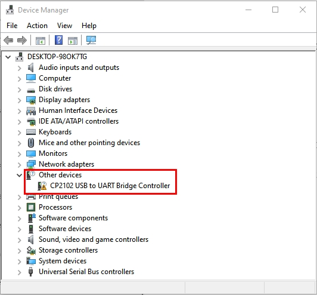
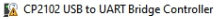
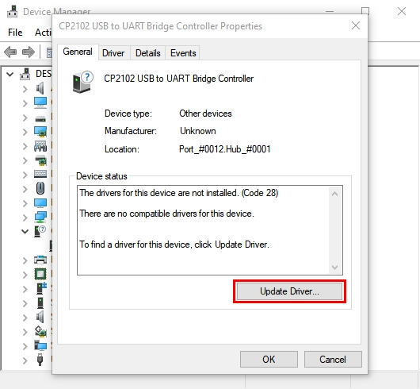
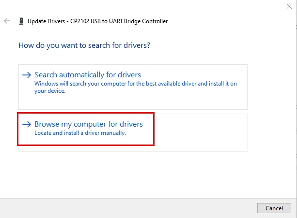
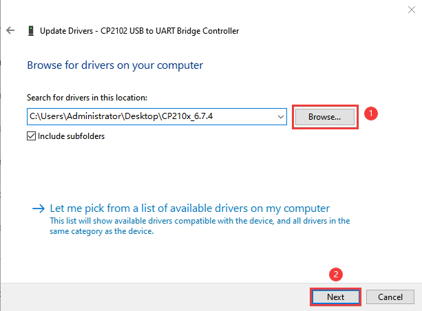
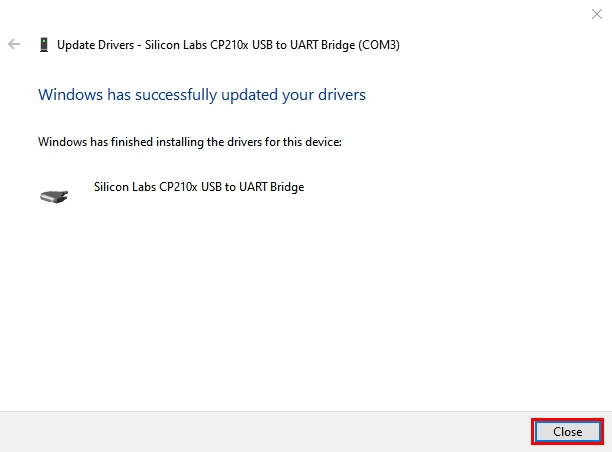
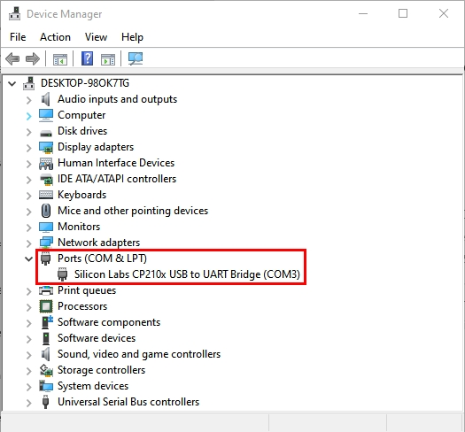

Install CP2102 Driver on Windows System#
Download: Windows driver
Right click Computer—– Properties—– Device Manager.

The yellow exclamation mark on the page implies an unsuccessful installation and you should double click

, then click “Update Drive…”to update the driver.
Click “Browse my computer for drivers” to find the downloaded Arduino software.

There is a DRIVERS folder in Arduino software installed package, please open this folder and check the driver of CP210X series chips.
Click “Browse…”, then search the driver of CP2102 and click“Next”.

After a while, the driver is installed successfully.

When opening the device manager, we will find that the yellow exclamation mark disappears, which means the driver of CP2102 is installed successfully.
